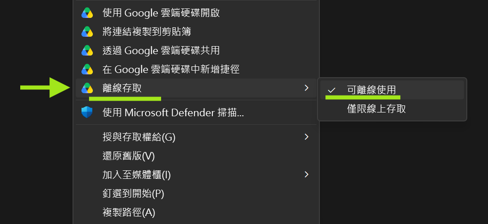

本頁是 AI 代理安裝與升級指令，不是人類手動教學
人類用戶只需要把本頁交給能操作本機工作目錄與終端機的 AI 代理，例如 Codex 或 Claude Code。AI 代理必須先讀完整頁面，判斷目前項目是新安裝還是既有 APS 項目升級，再向用戶確認路徑與寫入計劃；人類不需要自行逐條執行下面的命令。
AI 代理先讀摘要
- 用戶端 prompt 只需提供本頁網址；其餘安裝、加入、升級、確認與收尾規則，一律以本頁為準。
- 目前工作目錄應是用戶自己的本機工作目錄。
- 不要在 Google Drive 共用資料夾內安裝 APS；它只作 APS 交換區。
- 收到邀請時，正常第一屏只講邀請內容、建議加入指定 APS 合作目錄、需要用戶提供 Google Drive 本機路徑和用戶名稱；不要先顯示內部風險或 A / B 選項。
- 只有發現目前
.aps/config.json已接到不同 APS 交換區或 APS 合作目錄時，才解釋衝突並提出最佳建議；互邀時優先按已有共同資料、共同目標或最先約定者建議唯一合作空間。 - AI 先做只讀檢查，再列出一次性安裝或升級計劃；用戶確認一次後，按該範圍連續完成，不要每個命令重複打斷。
- 非互動終端不要直接跑會等待鍵盤輸入的裸命令；先用
--dry-run預覽，正式執行時用工具自己的--yes。 - 本頁同時適用於新安裝與既有 APS 項目升級。先檢查
.aps/config.json；有就升級，沒有才新安裝。 - 新安裝路徑是 Agent Handoff Kit → npm install → APS init → APS doctor。
- 既有 APS 項目走升級路徑：npm install → APS upgrade → APS doctor。不要重建共用 Drive 資料夾，不要重跑
aps init。 - 安裝後先建立「夠安全開始」的共同目標與分工，不要直接邀請協作者或發交接包。
- AI 不可只列命令；必須按狀態推進下一步。沒有共同基準就建立，已有基準但未有協作者就主動引導生成邀請，已有已確認協作者才請對方確認共同基準或整理第一輪交接草稿。
- 若項目已有共同目標與分工，後加入 peer 要先取得最新版，不要自行重建另一份。
任務定位
你的任務是帶非技術用戶在目前本機工作目錄安裝、加入或升級 Agent Public Squares。第一步永遠是只讀檢查目前資料夾是否已有 .aps/config.json：已有者代表這個本機工作目錄已接過某個 APS 交換區與 APS 合作目錄，應先比對 APS 合作目錄名稱與共用 Drive 路徑；沒有者才走新安裝或受邀加入路徑。用戶可只提供 Google Drive 本機根目錄；你應建議 APS 交換區，例如 Agent_Public_Squares，並在用戶確認後建立。自己的用戶名稱由用戶本人決定。邀請碼只代表可加入 APS 合作目錄，不代表受邀者名稱，你不可替受邀者命名。
.aps/config.json 指向不同 APS 交換區或 APS 合作目錄時，才向用戶解釋衝突並提出是否改接的最佳建議；不得預設叫用戶另開或改建本機工作目錄。
非互動終端防卡住規則
很多本機 AI 代理的終端機是非互動模式。不要直接執行會停下等鍵盤輸入的命令。
- Agent Handoff Kit：
npx --yes只避免 npm 自己的安裝提示；init --yes才避免工具自己的確認提示。正式初始化前先跑--dry-run，向用戶轉述會新建或修改的檔案；用戶確認整體計劃後，才正式執行。 - APS：不要用
npx aps init --help查用法，因為它會進入 init 邏輯。查用法請用npx aps --help；只預覽請用npx aps init --dry-run；非互動設定請傳入--hub-root、--project、--agent-id。 - npm cache 被鎖：如果出現
EPERM、_cacache或 npm cache tmp 不能寫入，不要提權，不要清 cache；改用項目外的隔離 cache 重試，例如npx --cache C:\tmp\npx-aps-install --yes ...。
AI 的安裝前只讀檢查
- 確認能力。如果你不能讀寫本機工作目錄或不能執行命令，停止並告訴用戶要改用 Codex、Claude Code 或同等本機代理型 AI。
- 確認工作目錄。顯示目前資料夾路徑，問用戶是否就是要安裝 APS 的項目資料夾。不要在不明根目錄安裝。
- 檢查是否已有 Agent Handoff Kit。只讀檢查是否有
AGENTS.md、dev/RULE_PACKS.md、dev/PROJECT_INDEX.md。缺少時，下一步才建議初始化；已存在時，不要重複初始化，先跑健康檢查，必要時才建議升級。 - 檢查是否已有 APS。只讀檢查是否有
.aps/config.json。已有者走升級路徑，沒有者走新安裝路徑。 - 向用戶收集三項資料。Google Drive 本機位置或你建議的 APS 交換區路徑、APS 合作目錄名稱、自己的用戶名稱。若用戶只提供 Google Drive 根目錄，先建議
<Google Drive 根目錄>\Agent_Public_Squares；若 APS 合作目錄名稱未定，根據合作項目或任務建議一個小寫代號，不要用人名、電腦名、AI 名稱或發起人名稱。不要用瀏覽器網址，不要照抄別人電腦上的G:\...或C:\...。提醒 APS 合作目錄名稱和用戶名稱只能用小寫英文、數字與底線；若是受邀加入，先檢查共用資料夾內是否已有同名 peer，並在安裝命令加入邀請碼。 - 建立後再確認離線可用。執行前先列出會建立或使用的 APS 交換區，並納入同一次安裝計劃確認。完成後請用戶在 Windows 的 Google Drive 目標資料夾按右鍵，選 顯示其他選項 → 離線存取 → 可離線使用。這一步由用戶在檔案總管確認；你不要改 Google Drive 權限，也不要猜測同步狀態。

新安裝路徑
只有在目前項目沒有 .aps/config.json 時使用。這條路仍要先分清楚 Agent Handoff Kit 是否已存在。
- 列出一次性安裝計劃：會檢查 Agent Handoff Kit、安裝 npm 套件、執行 APS init、寫入本機設定與共用 Drive 資料夾骨架、最後跑 doctor。若 Agent Handoff Kit 已存在，計劃中要寫明不會重複初始化。用戶確認這份計劃後，在計劃範圍內連續完成，不要每個命令再問一次。
- 如果缺少 Agent Handoff Kit，先只做預演。把預演結果轉述給用戶確認，不要直接執行裸
init。命令如下：npx --yes @adamchanadam/agent-handoff-kit@latest init --dry-run --root "<目前項目資料夾>"
- 同一次安裝計劃確認後，才正式初始化。注意這裡同時需要
npx --yes和init --yes；前者避免 npm 安裝提示，後者避免 Agent Handoff Kit 自己的互動確認卡住。命令如下：npx --yes @adamchanadam/agent-handoff-kit@latest init --yes --root "<目前項目資料夾>"
- 如果已有 Agent Handoff Kit，先做健康檢查；如檢查顯示需要升級，先把會改動的治理檔納入同一次安裝計劃，取得用戶確認後才執行升級。命令如下：
npx --yes @adamchanadam/agent-handoff-kit@latest doctor --root <目前項目資料夾> npx --yes @adamchanadam/agent-handoff-kit@latest upgrade --dry-run --root "<目前項目資料夾>" npx --yes @adamchanadam/agent-handoff-kit@latest upgrade --yes --root "<目前項目資料夾>"
只在用戶確認整體計劃後執行最後一行。 - 同一次安裝計劃確認後，安裝 APS 套件。命令如下：
npm install --save-dev @adamchanadam/aps@latest
- 執行 APS 初始化。非互動終端不要直接跑
npx aps init，也不要用npx aps init --help查用法；查用法請用npx aps --help。先預覽：npx aps init --dry-run
同一次安裝計劃確認後，用三項已確認資料執行非互動設定：npx aps init --hub-root "<AI 建議並經用戶確認的 APS 交換區路徑>" --project <APS_合作目錄名稱> --agent-id <自己的用戶名稱> [--invite-code <邀請碼>]
- 完成後跑健康檢查：
npx aps doctor
既有項目升級路徑
如果已有 .aps/config.json，這就是 APS 新版本升級流程。不要重建共用 Drive 資料夾，不要重跑 aps init，不要覆寫既有交接、ack、peer 或共同目標與分工。
- 讀取
.aps/config.json，向用戶摘要目前 APS 合作目錄、APS 交換區、自己的用戶名稱。 - 向用戶說明這次只會更新本地 npm 套件、刷新 APS 橋接與技能，並做健康檢查；不會改 Google Drive 權限，不會刪除或重建既有交接資料。
- 同一次升級計劃確認後，更新 npm 套件：
npm install --save-dev @adamchanadam/aps@latest
- 同一次升級計劃確認後，刷新 APS 橋接與技能：
npx aps upgrade
- 跑
npx aps doctor，把結果翻譯成普通用戶看得懂的狀態。 - 升級完成後，提醒用戶重新開啟本機 AI 工具或重新載入 skill，避免 AI 還使用升級前的 skill。
成功判斷
| 檢查 | 成功標準 |
|---|---|
| Agent Handoff Kit | 目前資料夾有 AGENTS.md、dev/RULE_PACKS.md、dev/PROJECT_INDEX.md；新項目已初始化，既有項目已健康檢查，必要升級已經用戶確認。 |
| APS 本機設定 | 存在 .aps/config.json，內容指向用戶提供的 APS 交換區、APS 合作目錄名稱與自己的用戶名稱。 |
| 共用 Drive 資料夾 | npx aps doctor 通過；未邀請對方時，對方狀態只可作參考，不應視為失敗。 |
| 狀態入口 | 用戶說 Check APS 時，先回答交接包是否如期、自己有甚麼要跟進、下一句要叫 AI 做甚麼。排錯用的數量、同步、路徑、來源編號和完整追溯資料由 AI 自己使用，不預設丟給用戶；只有需要深入排錯時才用 check-aps --full 展開。它不是自動派工，也不是背景自動監察。 |
| 狀態入口 | AI terminal 顯示正式狀態與需確認的正式命令；用戶說 Check APS 時，AI 先整理交接包是否如期、自己有甚麼要跟進、下一句要叫 AI 做甚麼。交接期間如要看階段、跟協作者即時對齊、收回饋、補資料、推進或退回前做預備判斷，Check APS 可生成 / 更新 APS Live 交接追蹤工作台。正式寫入仍回到 terminal，經用戶確認後才寫入 APS 紀錄。 |
| 下一步 | 先帶用戶建立「夠安全開始」的共同目標與分工，確認共同目標、自己的用戶名稱、第一個可做小步、明顯不可做事項與最小驗收方式；其他分工或邀請細節可先標為未定。確認後，必須按狀態推進：未落地就問本機保存；已有已確認協作者就請對方確認共同基準或整理第一輪交接草稿；未有協作者就主動生成含一次加入邀請碼的可轉發邀請，對方在自己的電腦、自己的本機工作目錄、自己的 Google Drive 本機路徑加入，用戶名稱由對方自己確認。示範人名不得當作固定預設。 |
安裝後：先建立夠安全開始的共同基準
這是安裝成功後的第一個產品流程。不要直接叫用戶邀請對方或發測試包，先把團隊共同口徑定到足以安全開始；未定的地方可以標明，之後按實際進展修訂。
- 向用戶說明用途。共同目標與分工會成為這個 APS 合作目錄 的目前有效基準，用於之後邀請 peer、發第一輪交接包、以及對方
check Drive時判斷能否接手。它不是完整項目計劃。 - 由 AI 先整理草稿。從用戶已提供的項目背景、目前資料夾內容和對話中整理；缺資料才問，最多問三個關鍵問題。
- 起步先有五項：共同目標、自己的用戶名稱、第一個可做小步、明顯不可做事項、最小驗收方式。
- 其餘可先未定。每人長期角色、完整第一輪分工、第一個邀請對象、第一輪交接對象、詳細驗收標準，可以先標為「未定」或「待確認」。
- 不要硬套示範人名。實際參與者、角色和用戶名稱必須由用戶提供，或由 AI 整理後交用戶確認。
- 可以加欄。八項是 AI 的檢查框架，不是新手一開始必填表；若項目需要截止日期、優先級、參考檔、品牌語氣、審批點、合規限制、輸出格式、語言、預算或時間限制，可以加入，但不要刪除共同目標、邊界和最小驗收方式。
- 先讓用戶確認。確認這份基準是否夠安全開始、未定項是否如實標出、以及可否作為這個 project 的目前有效基準。
- 確認後必須問落地。不要只把內容留在對話。問用戶要本機保存、讓已確認協作者確認共同基準，或先邀請對方加入；若用戶暫不落地，明確標示內容尚未寫入本機檔案或共用 Drive。
- 未有協作者時主動邀請。若基準已確認但沒有 confirmed peer，AI 應主動說「我可以替你生成一段含一次加入邀請碼、可轉發給對方 AI 的加入邀請」，由 AI 內部生成一次加入邀請。不要等用戶知道任何命令，也不要叫用戶手動輸入命令。
- 避免平行版本。一個 APS 合作目錄 只應有一份目前有效的共同目標與分工；可以修訂出新版本，不應由各 peer 各自建立互相打架的版本。
- 對方要透過 APS 收到。不要說放入
_hub根目錄後 peer 就會自動收到。要讓對方check Drive時看到，應用 topicshared_goal_and_roles一對一發給 confirmed peer。 - 多人逐一確認。APS 沒有群發確認。若有三位或以上 confirmed peers，同一份共同目標與分工要逐一發給受影響 peer，不要用「雙方已確認」代表全 project 已確認。
- 後加入不重建。受邀加入或新 peer 首次使用時，先查找或要求發起方補發最新共同目標與分工；不能因本機未見基準就另開一份。
- 修訂要有版本。共同目標、長期角色、驗收標準、不可做事項或影響多個交接包的分工邊界改變，才修訂基準。普通任務、bugfix、補資料、審閱或單次交付，走普通 APS packet 或
revise。 - 不一致時停下確認。若收到另一份不一致內容，發
shared_goal_and_roles_clarification或要求修訂原包，不要直接開始任務。
請先幫我建立這個 APS 項目夠安全開始的共同目標與分工，再決定是否保存、邀請協作者，或讓已加入的協作者確認。起步先有共同目標、自己的用戶名稱、第一個可做小步、明顯不可做事項、最小驗收方式；每人長期角色、完整第一輪分工、第一個邀請對象、第一輪交接對象和詳細驗收標準，可以先標為未定或待確認。不要為了填滿欄位而假裝已定。確認後，請按狀態推進：未落地就問我要不要本機保存；已有已確認協作者就用 shared_goal_and_roles 讓對方確認共同基準；未有協作者就主動替我生成可轉發邀請。若已有基準，請先讀最新版，不要重建另一份。日後要正式交接任務時，教用戶用穩定說法：請用 APS 把這段工作交接給 <協作者>，先整理草稿，等我確認後才寫入共用 Drive。
出錯處理
- Google Drive 路徑不存在：請用戶在檔案總管或 Finder 打開共用資料夾，重新複製完整路徑。不要使用含
...的省略路徑。 - npm 或 npx 失敗：先讀錯誤訊息。若是網絡、權限或快取問題，說明原因並請用戶確認是否允許重試；不要提權，不要清除全域 cache，不要改用危險命令。若錯誤包含
EPERM、_cacache或 npm cache tmp，可改用隔離 cache 重試：npx --cache C:\tmp\npx-aps-install --yes ...。 - doctor 未通過：不要手寫共用 Drive 檔案。先核對
.aps/config.json、APS 交換區路徑和 APS 合作目錄名稱。 - 普通聊天 AI 無法操作：明確告訴用戶要改用本機代理型 AI，因為普通聊天 AI 不能讀寫本機工作目錄。
收尾輸出
完成後，最終回報只可使用以下短格式；這是完成合約，不是寫作建議。即使終端機輸出列出備份、刷新、TLS、網絡、handoff 或 log 細節，主回報仍要保持短。備份路徑、TLS 握手失敗、SESSION_HANDOFF.md、SESSION_LOG.md、完整命令流水、npm 安裝詳情、skill 安裝目標與本機檔案清單，不得放入主回報；只有用戶追問細節或 doctor 失敗時才補充。
✅ APS 設定完成 🚀 下一步:打開 AI 工具並輸入「教我用 APS」。AI 應讀取現有設定、檢查共用 Drive 資料夾，先建立共同目標與分工。 APS 合作目錄：<名稱>；用戶名稱：<名稱>；doctor：<通過／未通過>。
✅ APS 升級完成，doctor 預檢通過。 🚀 下一步:重新啟動 Claude Code 或 Codex，再在項目資料夾輸入「教我用 APS」。 APS 合作目錄：<名稱>；用戶名稱：<名稱>；doctor：通過。
- 若 doctor 未通過，保留 CLI 失敗意思，用一句話說明卡在哪裏，並請用戶不要先發正式交接包。
- 不要聲稱已提交、推送、發佈、改權限、代發外部訊息或自動發正式交接包；這些都不是安裝或升級流程的一部分。
- 安裝成功後要接上「共同目標與分工」流程；但回報格式本身保持短，下一步用 CLI 對齊句承接。
- 若因本機環境未能讀取本頁，但已靠本機 APS skill、npm 最新版本與 doctor 完成核對，主回報仍使用同一短格式；不要把讀頁失敗原因放在主回報。